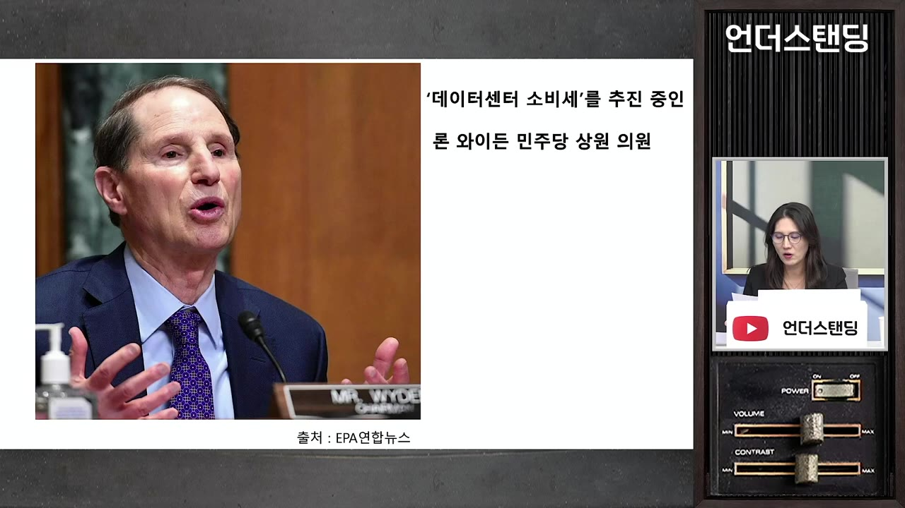
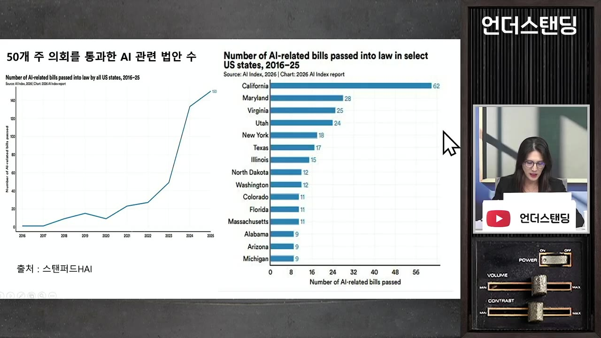
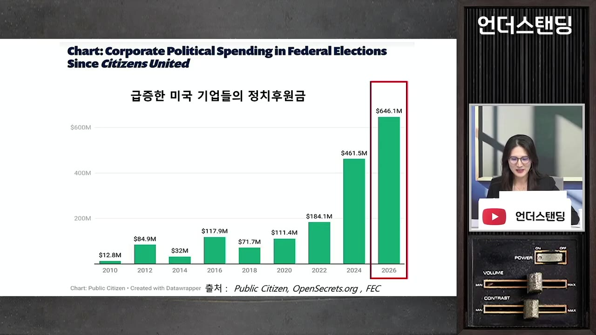

[하이라이트] 민주당 압승한 미국 중간선거, 조사·세금·규제 3개의 AI 규제 폭탄 터진다 | (미국 중간선거 이전인 2026년 10월 30일 방송된 내용입니다)
▶ 원본 영상 보기한눈에 보기
- 미국 중간선거 이후 AI 산업은 조사·세금·규제 세 방향에서 동시에 압박을 받을 수 있다는 것이 영상의 전망이다.
- 민주당 론 와이든 의원은 데이터센터 운영사 매출에 별도 세금을 물리고 기존 세제 혜택을 없애는 구상을 추진 중이다.
- 연방 AI 법이 없는 사이 주 정부 AI 법이 2023년 약 50건에서 2025년 150건으로 늘었고, 2026년 10월까지 115건이 더 제정됐다.
- 트럼프 행정부는 주법을 덮는 연방법을 원하지만, 선거 이후에는 의회 구도상 통과가 더 어려워진다.
- AI 기업들은 역대급 정치자금을 양당에 쏟고 있으며, 세금·규제 기준을 정하는 진짜 승부처는 2028년 대선이라는 해석이다.
이런 분께 도움이 됩니다
- 미국 AI·빅테크 투자자, 데이터센터·전력·반도체 관련 업계 종사자.
- AI 산업이 왜 정치 이슈가 됐는지, 세금·규제가 성장에 어떤 영향을 줄지 큰 그림을 잡고 싶은 분.
핵심 내용
결론: 혁신 산업에서 규제 산업으로
- 영상은 AI가 혁신 기업 중심 산업에서 규제 산업으로 넘어가는 국면이라고 본다. (13:22)
- 조사(누가 책임질 것인가), 세금(얼마나 낼 것인가), 규제(어떤 기준인가) 세 가지가 모두 미확정이다.
- 최종 승부처는 2028년 대선이라는 해석이다.
- 민주당이 상하원을 모두 가져가든, 하원만 가져가든, 공화당이 수성하든 지금보다는 AI에 불리해진다는 전망이다. (12:56)
💡 중간선거는 끝이 아니라 AI 규제·과세 기준을 둘러싼 긴 싸움의 중간 지점이다.
세금: 데이터센터 과세 추진
- 민주당 쪽에는 이미 '데이터센터 소비세' 구상이 있다. (0:55)
- 아마존, 마이크로소프트, 구글, 메타 같은 하이퍼스케일러(초대형 클라우드 사업자)와 오라클 등 운영사 매출에 별도 세금을 부과한다.
- 우주 데이터센터까지 포함하는 구상이라고 소개한다.
- 연방 차원의 세액공제·법인세 축소 같은 기존 혜택은 없앤다.
- 걷은 세금은 데이터센터 피해 지역 주민과 일자리를 잃은 노동자에게 나눠 준다.
- 추진자는 오리건주 민주당 론 와이든 상원의원으로, 상원 재무위원회 민주당 간사다. (1:53)

- 민주당이 상원을 가져가면 위원장이 되어 예산·세금 협상과 의제 설정 권한을 쥔다.
- 대통령 거부권을 넘어야 하지만 트럼프 행정부와의 협상 카드가 될 수 있다.
- 그는 억만장자세 주창자이기도 하다(자산 10억 달러 이상 또는 3년 연속 연소득 1억 달러 이상 대상). 이 때문에 일론 머스크가 반발했고 테슬라 주가가 급락한 일이 있었다고 한다.
- 초당적 흐름도 있다: 지난달 하원이 '전기요금 납부자 보호법'을 417대 3으로 통과시켰다. (4:33)
- 100MW 넘게 쓰는 대규모 데이터센터가 발전소·송전망 증설 비용을 부담하는 내용이다.
- 현재는 상원에서 막혀 있다.
- 주·지방정부도 움직인다. 애리조나 주지사는 7월에 데이터센터 세금 혜택을 3년간 중단했다.
- 수자원세, AI 연산(컴퓨팅)세 같은 아이디어도 거론된다.
- 비용이 늘면 AI 이용 요금과 기업 자금 압박으로 이어질 수 있다는 것이 진행자들의 설명이다.
규제: 주법 난립과 연방법의 한계
- 연방 AI 법이 없는 사이 주 정부들이 AI 법을 쏟아냈다. (7:48)
| 시점 | 주 의회 통과 AI 규제법 |
|---|---|
| 2023년 | 약 50건 |
| 2025년까지 | 약 150건 (3배) |
| 2026년 10월까지 | 115건 추가 제정 |
- 주별로는 캘리포니아가 가장 많고 메릴랜드, 버지니아, 유타, 뉴욕 순이다.

- 올해 발의된 AI 법안은 1,500건 이상이라고 한다.
- 문제는 주마다 기준이 다르다는 점이다. 예를 들어 안전 사고 신고 기한이 뉴욕 72시간, 캘리포니아 15일이다. (9:55)
- 기업은 결국 가장 강한 규제에 맞추게 된다.
- 비유: 50개 주마다 다른 안전 기준으로 비행기 50종을 만드는 격이다.
- 트럼프 행정부는 '연방 우선 원칙'으로 연방법이 주법을 무효화하는 단일 표준을 원한다. (10:26)
- 대통령·상원·하원을 한 당이 장악한 트라이펙타일 때나 밀어붙일 수 있어, 선거 후에는 더 어려워진다.
정치자금: 양다리 전략
- 이번 중간선거 기업 명의 자금이 약 6억 5천만 달러(약 8,500억 원)로 미국 역사상 최대라고 한다. (11:42)

- 일론 머스크: 7~9월 석 달간 공화당 쪽에 개인 명의로 약 4천억 원대를 넣었다고 소개한다(자막상 금액 불분명).
- 오픈AI 약 1,700억 원, 앤트로픽 500억 원 이상이며 두 회사는 양당 모두에 후원했다.
- 이유는 한쪽만 밀었다가 찍히면 위험하기 때문이라는 해석이다.
전망: 성장 둔화와 빅테크 쏠림
- 곳곳에 브레이크가 걸려 성장 속도가 느려질 수 있다. (14:22)
- 규제를 맞추기 어려워 신규 진입이 힘들어지면서 소수 빅테크의 독과점이 강해질 수 있다. (14:53)
- 기업들이 미친 듯이 선투자한 것도 먼저 자리 잡기 위해서라는 해석이다.
💡 규제는 성숙 산업의 신호이지만, 그 비용을 감당할 수 있는 큰 기업에 유리하게 작용할 수 있다.
기억할 숫자·인용
- 417대 3: 전기요금 납부자 보호법 하원 표결.
- 100MW: 법안이 적용되는 대규모 데이터센터 기준.
- 50건 → 150건: 주 AI 규제법 2023년 대비 2025년. 2026년 10월까지 115건.
- 72시간 vs 15일: 뉴욕과 캘리포니아의 안전 사고 신고 기한.
- 약 6억 5천만 달러: 이번 중간선거 기업 명의 후원금.
- "승부수는 2028년 대선."
생각해볼 점
- 영상은 방송 시점(2026-10-30) 기준 전망이다. 실제 선거 결과와 법안 진행은 따로 확인해야 한다.
- 와이든 구상은 아직 법안 추진 단계이며, 대통령 거부권과 공화당 반대로 실현 여부는 불확실하다.
- 정치자금 금액은 자막 인식 오류 가능성이 있어(머스크 금액 등) 원 출처 확인이 필요하다. 투자 판단의 근거로 단정하기는 어렵다.
바로 해볼 일
- 선거 결과 이후 상원 재무위원장이 누구인지, 데이터센터 과세 법안이 어떻게 진행되는지 확인하기
- 보유 중이거나 관심 있는 AI·데이터센터 관련 종목이 세금·전력비용 변화에 얼마나 민감한지 점검하기